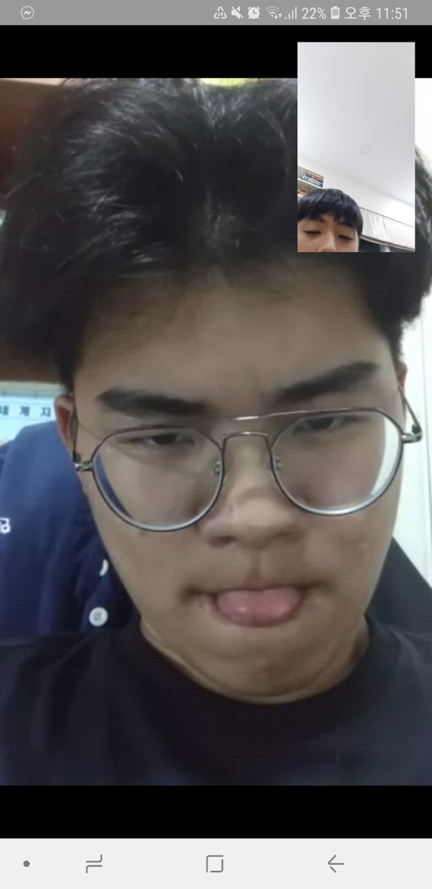
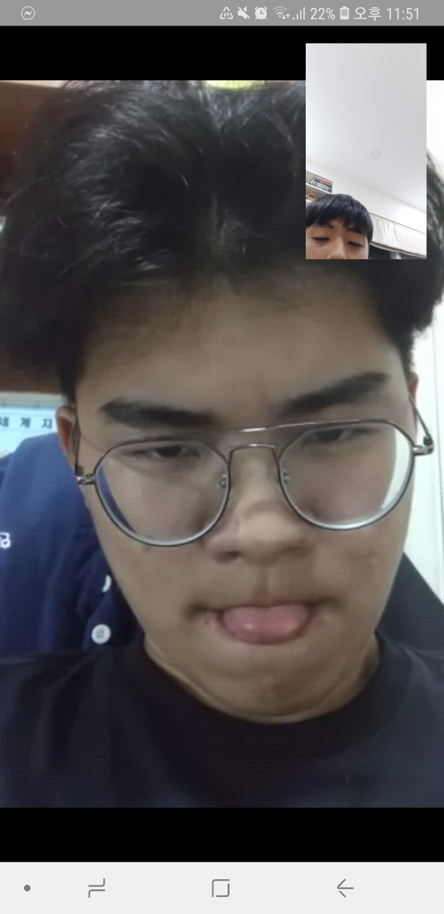

김영운 그는 누구인가?
 

김영운은 2002년 3월 19일 대한민국에서 유난히도 별이 반짝이던 밤에 태어났다. 그의 어머니는 김영운을 임신하고 까만피부의 괴한에게 쫓기는 태몽을 꾸었다고 한다.
그리고 태몽대로 그는 태어났을때부터 까맣고 커다란눈을 가지고 이 세상에 나왔다. (소문에 의하면 밤에는 등불없이 그를 볼 수 없을 정도로 까만피부를 가졌다고 전해진다)
그가 8살이 되던해에, 그는 우연찮게 동네 쓰레기장에 버려진 컴퓨터를 발견했고 집에 가져왔다. 그리고 그는 처음으로 만진 전자기기에 호기심을 느껴 꼭 컴퓨터 동아리의 부장이 되기로 결심한다.
출생: 2002년 3월 19일 (18살)
신체: 185cm
국적: 대한민국
취미: 축구보기 (EPL), 게임하기, 독서하기, 경제 공부하기, 춤추기
꿈: 대한민국 공군 제트기 파일럿
좋아하는 음식: 라오몽, 퍼, 팟따이, 똠냥꿍, 립 스테이크
좋아하는 동물: 코끼리, 원숭이, 코알라, 독수리, 고양이
좋아하는 색깔: 빨간색, 보라색
좋아하는 노래: 전설, BAD!, SAD!, 카니발갱
버킷리스트:
1) 지구상에 모든 땅 밟아보기
2) 안필드 가보기
3) 어벤져스 입단
4) 100kg 찍기
5) 몸짱 되보기
너에 대한 한줄평: 까맣다